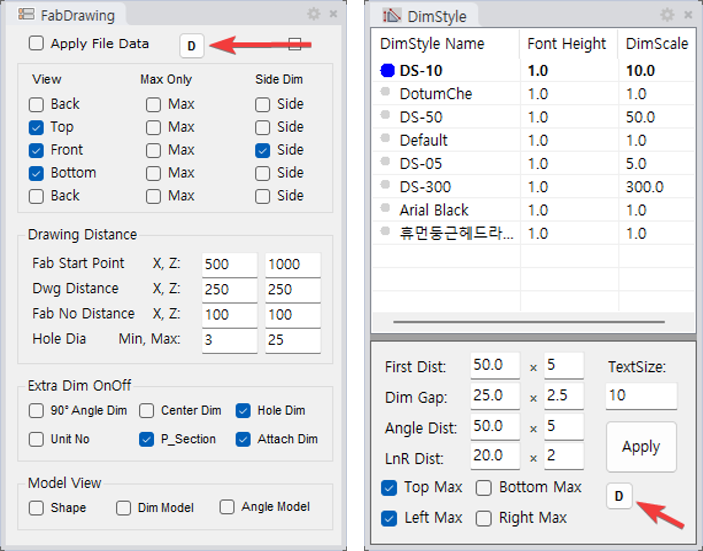
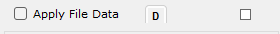
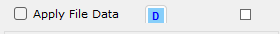
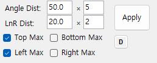
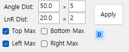

RCW saves default settings for various features in a single file: System_Default.dat.
This file is stored per PC, so different users (PCs) can have different defaults.
Each feature automatically reads this file on execution and applies the saved defaults.

DdOpt panel on the left, below Apply in DsOpt on the right.| Item | Description |
|---|---|
| Location | System_Default.dat in the RCW data folder. The full path is printed to the command line when it saves - copy that line to find the file. |
| Format | key=value one per line. Lines starting with # are comments. |
| Sharing | Multiple features share the same file. When saving, only its own entries are updated and other features' values are preserved. |
| Editing | If needed, the file can be opened directly in Notepad to edit values (no rebuild needed). |
| Feature | Saved Content |
|---|---|
| DdOpt | All Drawing option panel checkbox and input values (View / distance / dimension / model display, etc.). |
| DsOpt | The current DimStyle name, the multipliers (First, Gap, Angle, LnR) and the Top/Bottom/Left/Right Max check states. |
| Fablist | Label method (Fablist_LabelType = A/B) and label font scale (Fablist_LabelFontScale). |
| Feature | Method |
|---|---|
| DdOpt | Click the small D button near the top of the panel. |
| DsOpt | Click the small D button below the Apply button. |
| Fablist | During command execution, set the SaveAsDefault option to On, then after object selection completes, the current LabelType and LabelFontScale are saved as defaults. |



Apply, before the click.
System_Default.dat are automatically read and applied.